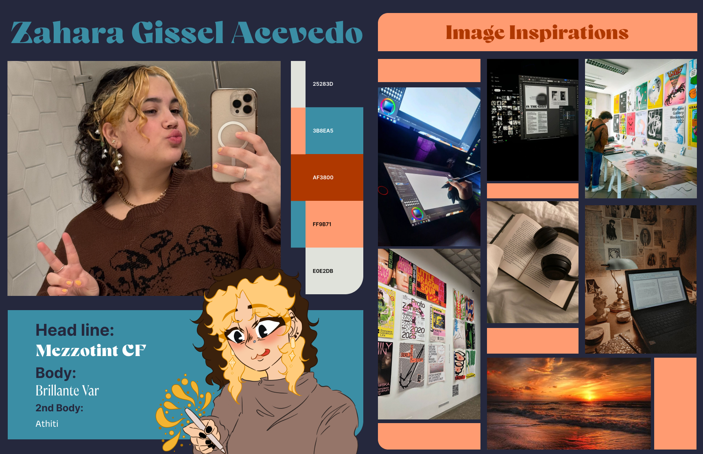

The Threshold: What was the specific moment this quarter where "code" clicked for you?
To be completely honest, I didn't really 'click' with coding; instead,
it felt more like a process where I learned specific codes and then
learned how to apply them to various situations. However, as of right
now, I have a completely different understanding of how coding works
and the systems that surround it than I did at the beginning of this
quarter. It's a really fascinating field of study, but one thing I
know for sure is that I will never be completely knowledgeable about
it because, even when I think I understand something, like CSS or
HTML, there's always more to learn, and that can be difficult to
grasp. However, i dont mean this in a bad way, I enjoy the challenge
of learning coding as it relates to my design career.
The Pit: What was the hardest assignment? How did you get yourself out of the "pit of despair"?
The interactive field guide was the most difficult assignment,
primarily because we had to apply responsive design principles in
addition to flex grids and sticky positions. I still find coding to be
a difficult concept, and the only way I was able to get past it was by
doing more research and using Google Gemini and Claude Code to help me
understand how to solve the problems I kept running into.
The Pivot: Look at your original "Moodz and Vibes." How does your final portfolio compare? Did you stick to the plan or pivot? Why?
Compared to my original mood bored everything stayed pretty much the
same, the only thing that was different, was how I carried out this
project. Using the personal branding I completed for another final
assignment, I was able to figure out how to execute my design choices.
And while they are far from perfect i plan on working through them as i
gain more technical and design experience.
Original mood board i made in the beginning of the quarter

The Process: What would you change about how you approached this course?
I believe the biggest challenge i faced during this quarter was my
time management. Its not easy to do full time school while also doing
a full time job, so planing out my time more accordingly might help,
although there was a lot of other factors that impacted my work that
was out of my control, i still plan on doing the best with what i can
do fro the future.
The Future: How do you see this hybrid skillset (Design + Code) impacting your future practice?
I see code having an influence on my future work by expanding my skill
set to encompass a different field of study and, in a sense, granting
me greater creative freedom because I will have these abilities to
support my objectives. Additionally, it makes me more adaptable as a
designer, which will assist me and my future clients achieve the
desired outcomes.